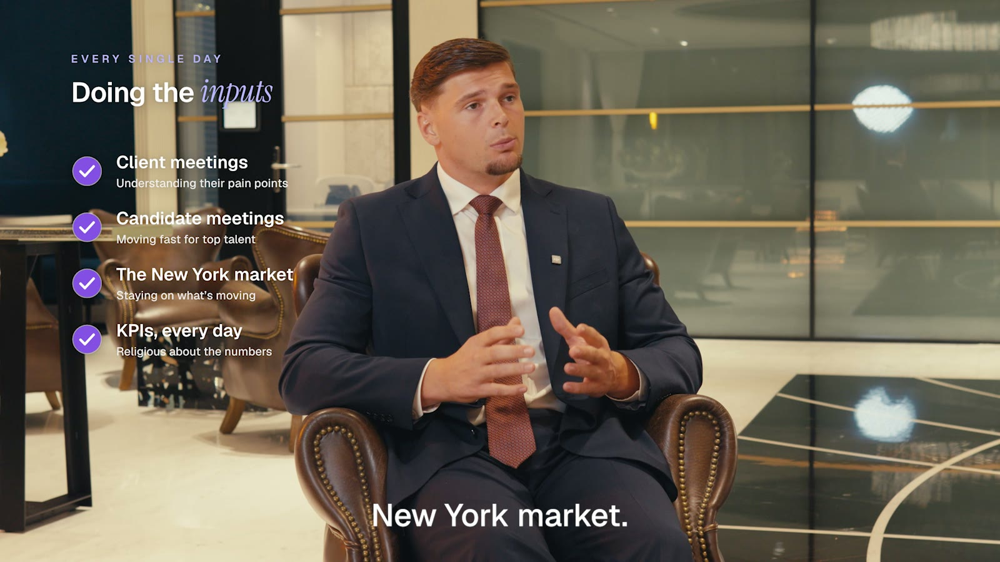
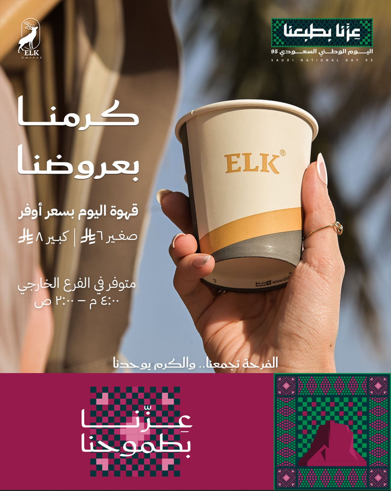
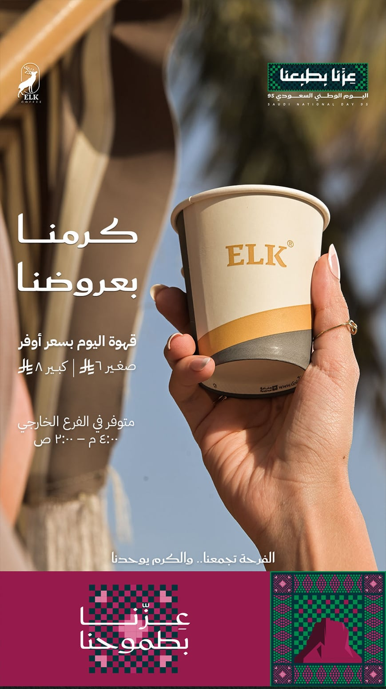

Video, design, motion, voiceover and content, made to one standard.

A six-minute, documentary-style film for a recruitment firm going from Dubai to New York. Told by their own people.
Interview edit · Motion graphics · Finish


A Saudi National Day look for a coffee brand: posts, stories and a September content plan.
A visual identity for an Emirati software and AI platform: mark, palette, type, icons and applications.
Film, feed, story, print and screen, from one team that knows your brand.